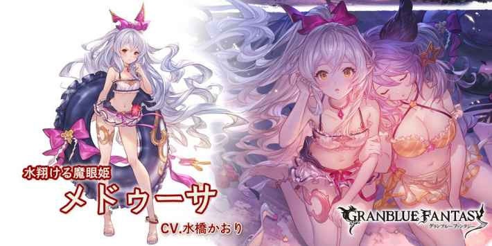
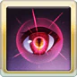
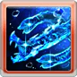
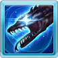

•1隻:攻擊+30%(個別乘算/久遠類)
•2隻:防禦+100%
•3隻:必TA
•4隻:迴避率+20%
•5隻:傷害上限+20%
波蛇Lv5且自己沒受到傷害的回合結束時，發動2技
水着メドゥーサ
基本資訊
| 定位 | 防禦 |
| 得意武器 | 格鬥/杖 |
| 種族 | 星晶獸 |
| CV | 水橋かおり |
立繪
上限解放前||上限解放後奧義
| メドゥシアナ･スライダー | |
| 火屬性4.5倍傷害 我方全體幻影效果(1次) 自己完全迴避效果(1次) |
主動技能
|  CD:7 |
ミラージュ･アイ |
| 我方全體反射盾效果(60%/3T/每T1次) 我方全體預防盾效果(1次) •當自己波蛇Lv5時，全體屏障效果(耐久5000)，2倍受傷反擊效果(被打迴避/3T/2次) |
|
|  CD:5 |
サーペントスパイク |
| 敵方隨機目標5次火屬性1倍傷害 敵方全體驅散1個強化效果 敵方全體毒效果(5000)，持續180秒 •隨著波蛇Lv追加傷害次數(最多10次) |
|
|  CD:11 |
ペトリファクトゲイズ |
| 敵方全體獲得以下效果 •魔眼的石化(1T/無法消除) └無法行動 •DA-100%(6T) •TA-100%(6T) •命中-30%(6T) |
被動技能
|
星トモのバカンス |
| 依據隊伍中星晶獸數量自己獲得以下強化效果 •1隻:攻擊+30%(個別乘算/久遠類) •2隻:防禦+100% •3隻:必TA •4隻:迴避率+20% •5隻:傷害上限+20% |
|
|
波蛇の姫 |
| 自己沒受到傷害的回合結束時，波蛇Lv+1(最多5/無法消除) 波蛇Lv5且自己沒受到傷害的回合結束時，發動2技 |